Encontre seu imóvel em São Martinho e região
41 imóveis à venda e para alugar, com preço, fotos e atendimento direto com o corretor. CRECI 45.125/RS.
Busque por tipo de imóvel
Imóveis em destaque
Os imóveis mais completos da carteira, escolhidos pela Kiesel.
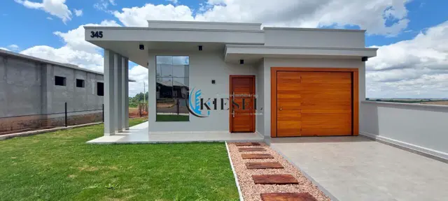
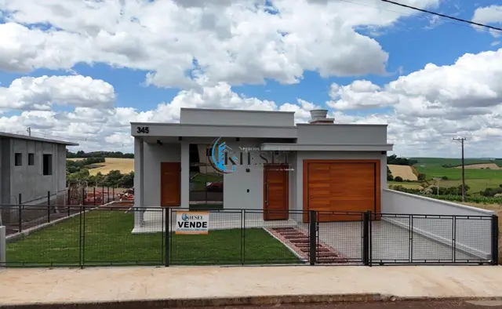
CA0036CasaCasa com 2 quartos, 105 m²
R$ 550.000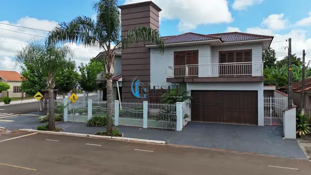
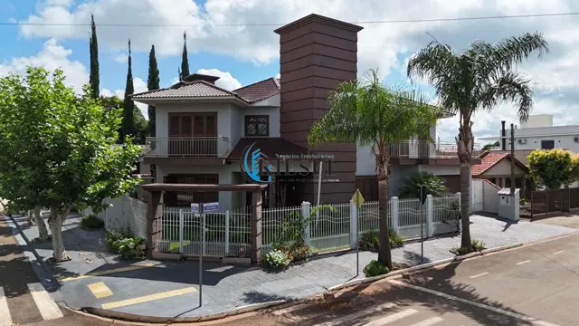
CA0044CasaCasa com 2 quartos, 303 m²
R$ 1.350.000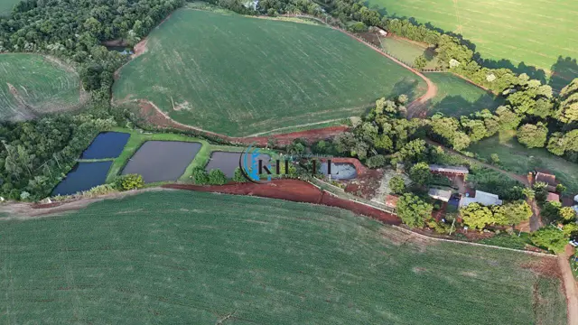
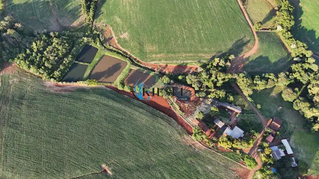
CH0005ChácaraChácara com 3 quartos, 3 hectares
R$ 950.000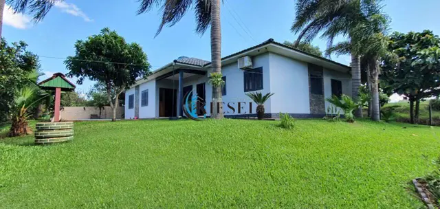
CH0002ChácaraChácara com 3 quartos, 4.500 m²
R$ 900.000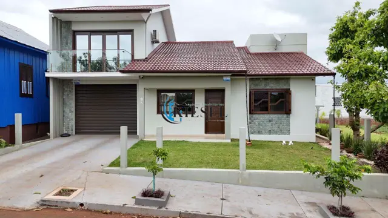
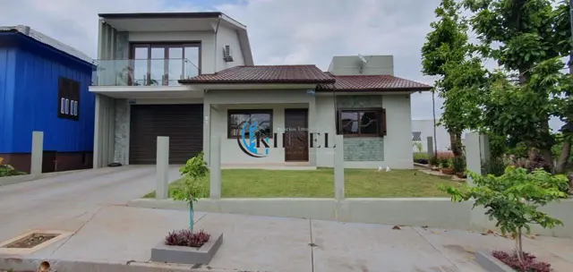
CA0035CasaCasa com 3 quartos, 220 m²
R$ 1.250.000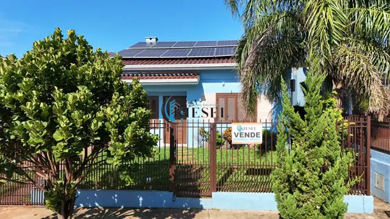
CA0047CasaCasa com 3 quartos, 132 m²
R$ 775.000A imobiliária da cidade
Corretagem registrada
CRECI 45.125/RS. Contrato, documentação conferida e orientação em cada etapa, da visita à escritura.
Conhece cada quadra
Escritório na Avenida Getúlio Vargas, no Centro. Sabe o histórico dos imóveis, a vizinhança e o que cada bairro oferece.
Preço na vitrine
Nenhum imóvel "sob consulta". Valor, fotos e descrição completa de tudo o que está disponível.
Atualizados recentemente
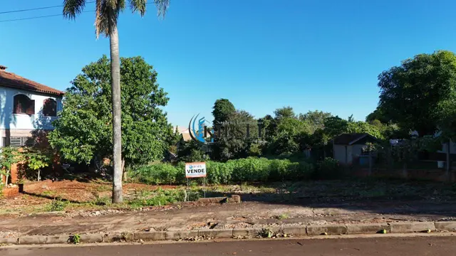
TE0028TerrenoTerreno, 987 m²
R$ 300.000Casa com 3 quartos, 132 m²
R$ 775.000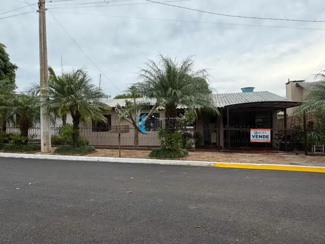
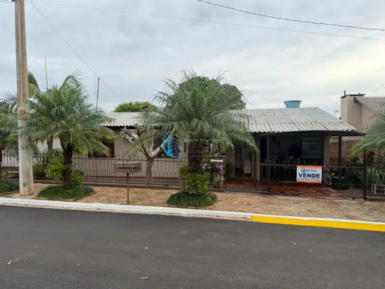
CA0045CasaCasa com 3 quartos, 110 m²
R$ 380.000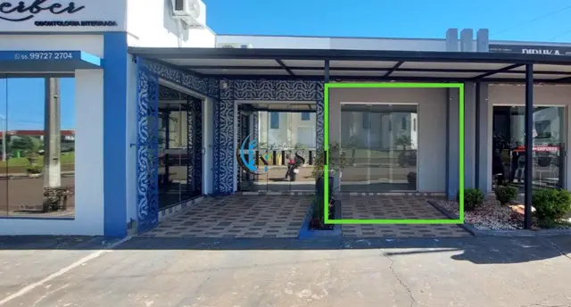
SA0003Sala comercial · aluguelSala, 80 m²
R$ 1.300/mês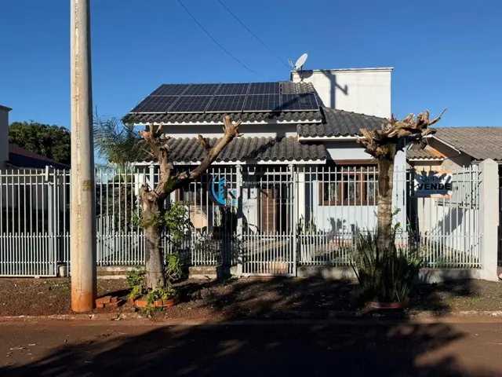
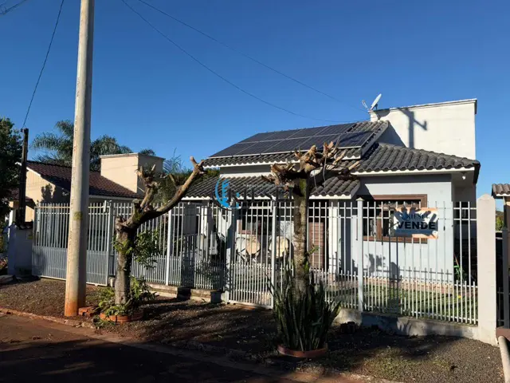
CA0046CasaCasa com 2 quartos, 100 m²
R$ 580.000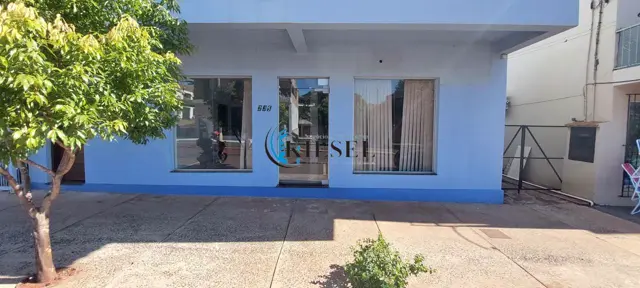
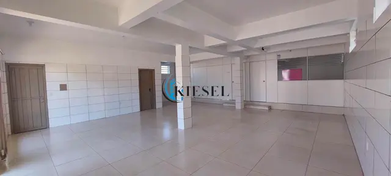
SA0002Sala comercial · aluguelSala comercial no Centro
R$ 1.900/mês
Quer vender ou alugar o seu imóvel?
Avaliação de mercado, fotos, anúncio neste site e no Facebook, visitas acompanhadas e documentação conferida. Você só fala com a Kiesel.
Sem surpresa, do primeiro contato à escritura
Conversa
Você conta o que procura ou o que quer vender. A Kiesel responde pelo WhatsApp, sem formulário intermediário nem central de atendimento.
Visita
Visita acompanhada pelo corretor, que conhece o imóvel, a vizinhança e o histórico de cada quadra. Você vê o que a foto não mostra.
Proposta, financiamento e escritura
Negociação direta com o proprietário, orientação para financiar e documentação conferida até a assinatura. Simule aqui no site antes de visitar.
Por trás de cada negócio, uma história de respeito e confiança.
A Kiesel Negócios Imobiliários atende São Martinho, o interior e os municípios vizinhos com casas, terrenos, chácaras, áreas rurais e salas comerciais. Toda a carteira está neste site com preço, fotos e descrição.